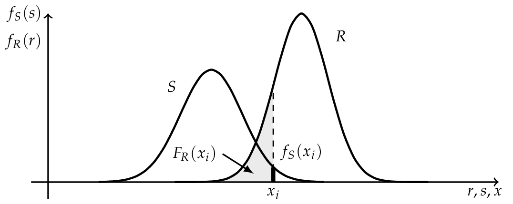
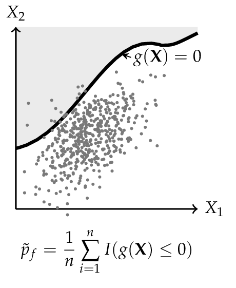
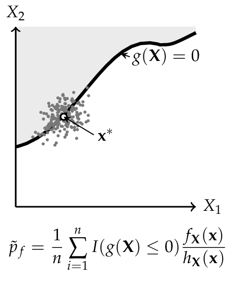

Theoretical Background#
Structural Reliability#
Structural reliability analysis (SRA) is an important part to handle structural engineering applications [Melchers1999]. This section provides a brief introduction to this topic and is also the theoretical background for the Python library, Python Structural Reliability Analysis (Pystra).
Limit States#
The word structural reliability refers to the meaning “how much reliable is a structure in terms of fulfilling its purpose” [Malioka2009]. The performance of structures and engineering systems was based on deterministic parameters even for a long time, even if it was known that all stages of the system involve uncertainties. SRA provides a method to take those uncertainties into account in a consistent manner. In this content the term probability of failure is more common than reliability. [Malioka2009]
In general, the term “failure” is a vague definition because it means different things in different cases. For this purpose the concept of limit state is used to define failure in the context of SRA. [Nowak2000]
Note
A limit state represents a boundary between desired and undesired performance of a structure.
This boundary is usually interpreted and formulated within a mathematical model for the functionality and performance of a structural system, and expressed by a limit state function. [Ditlevsen2007]
Note
[Limit State Function]
Let \({\bf X}\) describe a set of random variables \({X}_1 \dots {X}_n\) which influence the performance of a structure. Then the functionality of the structure is called limit state function, denoted by \(g\) and given by
The boundary between desired and undesired performance would be given when \(g({\bf X}) = 0\). If \(g({\bf X}) > 0\), it implies a desired performance and the structure is safe. An undesired performance is given by \(g({\bf X}) \leq 0\) and it implies an unsafe structure or failure of the system. [Baker2010]
The probability of failure \(p_f\) is equal to the probability that an undesired performance will occur. It can be mathematical expressed as
assuming that all random variables \({\bf X}\) are continuous. However, there are three major issues related to the Equation (2), proposed by [Baker2010]:
There is not always enough information to define the complete joint probability density function \(f_X({\bf x})\).
The limit state function \(g({\bf X})\) may be difficult to evaluate.
Even if \(f_X({\bf x})\) and \(g({\bf X})\) are known, numerical computing of high dimensional integrals is difficult.
For this reason various methods have been developed to overcome these chal- lenges. The most common ones are the Monte Carlo simulation method and the First Order Reliability Method (FORM).
The Classical Approach#
Before discussing more general methods, the principles are shown on a “historical” and simplified limit state function.
Where \(R\) is a random variable for the resistance with the outcome \(r\) and \(S\) represents a random variable for the internal strength or stress with the outcome of \(s\). [Lemaire2010] The probability of failure is according to Equation (2):
If \(R\) and \(S\) are independent the Equation (4) can be rewritten as a convolution integral, where the probability of failure \(p_f\) can be (numerical) computed. [Schneider2007]
{kind=link}

If \(R\) and \(S\) are independent and \(R \sim N (\mu_R , \sigma_R )\) as well as \(S \sim N (\mu_S , \sigma_S )\) are normally distributed, the convolution integral (5) can be evaluated analytically.
where \(M\) is the safety margin and also normal distributed \(M \sim N (\mu_M , \sigma_M )\) with the parameters
The probability of failure \(p_f\) can be determined by the use of the standard normal distribution function.
Where \(\beta\) is the so called Cornell reliability index, named after Cornell (1969), and is equal to the number of the standard derivation \(\sigma_M\) by which the mean values \(\mu_M\) of the safety margin \(M\) are zero. [Faber2009]

Hasofer and Lind Reliability Index#
The reliability index can be interpreted as a measure of the distance to the failure surface, as shown in the Figure above. In the one dimensional case the standard deviation of the safety margin was used as scale. To obtain a similar scale in the case of more basic variables, Hasofer and Lind (1974) proposed a non-homogeneous linear mapping of a set of random variables \({\bf X}\) from a physical space into a set of normalized and uncorrelated random variables \({\bf Z}\) in a normalized space. [Madsen2006]
Note
[Hasofer and Lind Reliability Index]
The Hasofer and Lind reliability index, denoted by \(\beta_{HL}\), is the shortest distance \({\bf z}^*\) from the origin to the failure surface \(g({\bf Z})\) in a normalized space.
The shortest distance to the failure surface \({\bf z}^*\) is also known as design point and \({\vec \alpha}\) denotes the normal vector to the failure surface \(g({\bf Z})\) and is given by
where \(g({\bf z})\) is the gradient vector, which is assumed to exist: [Madsen2006]
Finding the reliability index \(\beta\) is therefore an optimization problem
The calculation of \(\beta\) can be undertaken in a number of different ways. In the general case where the failure surface is non-linear, an iterative method must be used. [Thoft-Christensen]
Probability Transformation#
Due to the reliability index \(\beta_{HL}\) , being only defined in a normalized space, the basic random variables \(\bf X\) have to be transformed into standard normal random variables \(\bf Z\). Additionally, the basic random variables \(\bf Z\) can be correlated and those relationships should also be transformed.
Transformation of Dependent Random Variables using Nataf Approach#
One method to handle this is using the Nataf joint distribution model, if the marginal cdfs are known. [Baker2010] The correlated random variables \({\bf X} = ( X_1 , \dots , X_n )\) with the correlation matrix \(\bf R\) can be transformed by
into normally distributed random variables \(\bf Y\) with zero means and unit variance, but still correlated with \({\bf R}_0\) . Nataf’s distribution for \(\bf X\) is obtained by assuming that \(\bf Y\) is jointly normal. [Liu1986]
The correlation coefficients for \(\bf X\) and \(\bf Y\) are related by
Once this is done, the transformation from the correlated normal random variables \(\bf Y\) to uncorrelated normal random variables \(\bf Z\) is addressed. Hence, the transformation is
where \(\bf L\) is the Cholesky decomposition of the correlation matrix \(\bf R\) of \(\bf Y\). The Jacobian matrix, denoted by \(\bf J\), for the transformation is given by
This approach is useful when the marginal distribution for the random variables \(\bf X\) is known and the knowledge about the variables dependence is limited to correlation coefficients. [Baker2010] [DerKiureghian2006]
Transformation of Dependent Random Variables using Rosenblatt Approach#
An alternative to the Nataf approach is to consider the joint pdf of \(\bf X\) as a product of conditional pdfs.
As a result of the sequential conditioning in the pdf, the conditional cdfs are given for \(i \in [1,n]\)
These conditional distributions for the random variables \(\bf X\) can be transformed into standard normal marginal distributions for the variables \(\bf Z\), using the so called Rosenblatt transformation [Rosenblatt1952], suggested by Hohenbichler and Rackwitz (1981).
The Jacobian of this transformation is a lower triangular matrix having the elements [Baker2010]
In some cases the Rosenblatt transformation cannot be applied, because the required conditional pdfs cannot be provided. In this case other transformations may be useful, for example Nataf transformation. [Faber2009]
First-Order Reliability Method (FORM)#
Let \(\bf Z\) be a set of uncorrelated and standardized normally distributed random variables \(( Z_1 ,\dots, Z_n )\) in the normalized z-space, corresponding to any set of random variables \({\bf X} = ( X_1 , \dots , X_n )\) in the physical x-space, then the limit state surface in x-space is also mapped on the corresponding limit state surface in z-space.
According to Definition (10), the reliability index \(\beta\) is the minimum distance from the z-origin to the failure surface. This distance \(\beta\) can directly be mapped to a probability of failure
this corresponds to a linearization of the failure surface. The linearization point is the design point \({\bf z}^*\). This procedure is called First Order Reliability Method (FORM) and \(\beta\) is the First Order Reliability Index. [Madsen2006]

Representation of a physical space with a set \({\bf X}\) of any two random variables. The shaded area denotes the failure domain and \(g({\bf X}) = 0\) the failure surface.

After transformation in the normalized space, the random variables \({\bf X}\) are now uncorrelated and standardized normally distributed, also the failure surface is transformed into \(g({\bf Z}) = 0\).

FORM corresponds to a linearization of the failure surface \(g({\bf Z}) = 0\). Performing this method, the design point \({\bf z}^*\) and the reliability index \(\beta\) can be computed.
Second-Order Reliability Method (SORM)#
FORM approximates the failure surface \(g({\bf Z}) = 0\) by a tangent hyperplane at the design point. When the failure surface has significant curvature at the design point, this linear approximation can over- or under-estimate \(p_f\). The Second-Order Reliability Method (SORM) improves on FORM by fitting a quadratic surface (paraboloid) to \(g({\bf Z}) = 0\) at the design point, thereby capturing second-order effects [Baker2010].
Quadratic approximation in rotated space#
Starting from the FORM design point \({\bf z}^*\) and the unit direction vector \(\boldsymbol{\alpha} = -{\bf z}^*/\beta\), the standard normal space is rotated so that \({\bf z}^*\) lies at distance \(\beta\) along the last axis. Let \({\bf R}\) denote the orthonormal rotation matrix constructed by Gram–Schmidt orthonormalisation with \(\boldsymbol{\alpha}\) in the last row, and let \({\bf u}' = {\bf R}\,{\bf z}\) be coordinates in the rotated space. In these coordinates the failure surface is approximated as:
where \(\kappa_i\) are the principal curvatures of the failure surface at the design point and \(u'_n\) is the coordinate along the design-point direction. Positive curvature means the failure surface curves away from the origin (conservative with respect to FORM); negative curvature means it curves towards the origin (unconservative).
The key task is to determine the principal curvatures \(\kappa_i\). Pystra provides two approaches.
Curve-Fitting#
The default method (fit_type='cf') obtains the curvatures from the
Hessian matrix of the limit state function. The Hessian \({\bf H}\)
of \(g\) at the design point \({\bf z}^*\) is computed by finite
differences of the gradient that is already available from FORM. This
matrix is then rotated and normalised:
The principal curvatures \(\kappa_i\) are the eigenvalues of the leading \((n{-}1) \times (n{-}1)\) sub-matrix of \({\bf A}\) (i.e.the block excluding the last row and column, which corresponds to the design-point direction). These curvatures are symmetric: the paraboloid has the same curvature on both sides of each principal axis.
The Breitung approximation [Breitung1984] then gives the second-order failure probability:
This result is asymptotically exact as \(\beta \to \infty\).
Point-Fitting#
An alternative method (fit_type='pf') determines the curvatures by
locating fitting points directly on the failure surface, without computing
the Hessian. For each of the \(n{-}1\) principal axes in the rotated
space, a pair of trial points is placed at \(u'_i = \pm k\beta\)
(where \(k\) is an adaptive step coefficient), with all other
off-axis coordinates set to zero and \(u'_n = \beta\). Newton
iteration along the \(u'_n\)-direction then drives each point onto
the surface \(g = 0\).
Once a fitting point has converged, its curvature is computed from the displacement along the design-point direction:
Because points are fitted on both the positive and negative sides of each axis, the method yields asymmetric curvatures \(\kappa_i^+\) and \(\kappa_i^-\). The generalised Breitung formula for asymmetric curvatures is:
When the curvatures are symmetric (\(\kappa_i^+ = \kappa_i^-\)), this reduces to the standard Breitung formula (23).
Hohenbichler–Rackwitz Modification#
The Breitung formula is asymptotically exact for large \(\beta\) but can be inaccurate for moderate values. Hohenbichler and Rackwitz [Hohenbichler1988] proposed replacing \(\beta\) in the curvature terms with:
where \(\phi\) is the standard normal PDF. The quantity \(\psi\) is the conditional mean of the standard normal distribution given that it exceeds \(\beta\), and provides a better local expansion for moderate reliability indices. The modified formula is:
with the obvious extension to asymmetric curvatures from point-fitting. Both the standard and modified Breitung results are reported by Pystra.
Validity and method comparison#
The Breitung and Hohenbichler–Rackwitz formulas require each curvature term in the product to be positive. For the standard Breitung formula this means \(\kappa_i > -1/\beta\); for the modified formula, \(\kappa_i > -1/\psi\). If any curvature violates this bound the approximating paraboloid opens towards the origin and the second-order approximation is invalid.
The two fitting methods offer different trade-offs:
Curve-fitting requires fewer limit state evaluations (one gradient perturbation per random variable) and produces symmetric curvatures. It is well suited to smooth failure surfaces where the curvature is approximately the same on both sides of the design point.
Point-fitting requires more evaluations (Newton iteration for each of \(2(n{-}1)\) fitting points) but captures asymmetric curvature. This is advantageous when the failure surface has markedly different shapes on each side of the design point, as can occur with non-linear limit state functions.
Simulation Methods#
The preceding sections describe some methods for determining the reliability index \(\beta\) for some common forms of the limit state function. However, it is sometimes extremely difficult or impossible to find \(\beta\). [Nowak2000]
In this case, Equation (2) may also be estimated by numerical simulation methods. A large variety of simulation techniques can be found in the literature, indeed, the most commonly used method is the Monte Carlo method. [Faber2009]
The principle of simulation methods is to carry out random sampling in the physical (or standardized) space. For each of the samples the limit state function is evaluated to figure out, whether the configuration is desired or undesired. The probability of failure \(p_f\) is estimated by the number of undesired configurations, respected to the total numbers of samples. [Lemaire2010]
For this analysis Equation (2) can be rewritten as
where \(I\) is an indicator function that is equals to 1 if \(g({\bf X}) \leq 0\) and otherwise 0. Equation (26) can be interpreted as expected value of the indicator function. Therefore, the probability of failure can be estimated such as [Malioka2009]
Crude Monte Carlo Simulation#
The Crude Monte Carlo simulation (CMC) is the most simple form and corresponds to a direct application of Equation (27). A large number \(n\) of samples are simulated for the set of random variables \(\bf X\). All samples that lead to a failure are counted \(n_f\) and after all simulations the probability of failure \(p_f\) may be estimated by [Faber2009]
Theoretically, an infinite number of simulations will provide an exact probability of failure. However, time and the power of computers are limited; therefore, a suitable amount of simulations \(n\) are required to achieve an acceptable level of accuracy. One possibility to reach such a level is to limit the coefficient of variation CoV for the probability of failure. [Lemaire2010]
Importance Sampling#
To decrease the number of simulations and the coefficient of variation, other methods can be performed. One commonly applied method is the Importance Sampling simulation method (IS). Here the prior information about the failure surface is added to Equation (26)
where \(h_{X} ({\bf X})\) is the importance sampling probability density function of \(\bf X\). Consequently Equation (27) is extended to [Faber2009]
The key to this approach is to choose \(h_{X} ({\bf X})\) so that samples are obtained more frequently from the failure domain. For this reason, often a FORM (or SORM) analysis is performed to find a prior design point. [Baker2010]

Representation of a physical space with a set \({\bf X}\) of any two random variables. The shaded area denotes the failure domain and g({bf X}) = 0 the failure surface.
{kind=link}

For the CMC method every dot corresponds to one configuration of the random variables \({\bf X}\). Dots in shaded areas lead to a failure.
{kind=link}

The IS simulation method uses a distribution centered on the design point \({\bf x}^*\), is obtained from a FORM (or SORM) analysis. More dots in the failure domain can be observed.
Line Sampling#
Line Sampling (LS) is a variance-reduction technique that exploits the important direction \(\boldsymbol{\alpha}\) identified by FORM to reduce the n-dimensional sampling problem to a family of one-dimensional problems [Koutsourelakis2004].
The important direction \(\boldsymbol{\alpha}\) is the unit vector from the origin in standard-normal space toward the most probable failure point. For each of \(N\) random samples \(\mathbf{u}_i\) drawn from \(\mathcal{N}(\mathbf{0}, \mathbf{I})\), the component along \(\boldsymbol{\alpha}\) is projected out to obtain the foot-point
which lies in the \((n-1)\)-dimensional hyperplane perpendicular to \(\boldsymbol{\alpha}\). A root-finding step then locates the scalar \(c_i\) such that
The failure probability is estimated as the average of the one-dimensional conditional failure probabilities along each line:
where \(\Phi\) is the standard normal CDF. Each term \(\Phi(-c_i)\) is the probability that a point drawn from \(\mathcal{N}(0,1)\) along the \(i\)-th line lies in the failure domain.
The variance of the estimator is
giving a coefficient of variation
Line Sampling is particularly efficient when the failure surface is nearly planar near the design point, because all \(c_i\) are then close to \(\beta_{\text{FORM}}\) and \(\operatorname{Var}[\Phi(-c_i)]\) is small.
Subset Simulation#
Subset Simulation (SS) is an adaptive simulation method that decomposes the rare failure event \(F = \{g(\mathbf{u}) \le 0\}\) into a sequence of more frequent nested intermediate events [AuBeck2001]:
where \(F_j = \{g(\mathbf{u}) \le y_j\}\) and the thresholds satisfy \(y_1 > y_2 > \cdots > y_m = 0\). By the chain rule of probability,
Each conditional probability is targeted at a user-specified level \(p_0\) (typically 0.1), making every factor in the product relatively large and easy to estimate.
Algorithm
Level 0 — Generate \(N\) samples from \(\mathcal{N}(\mathbf{0}, \mathbf{I})\) and evaluate the LSF. Choose \(y_1\) as the \(p_0\)-th quantile of the LSF values, so that \(N p_0\) samples satisfy \(g \le y_1\). If \(y_1 \le 0\), the failure probability is estimated directly as \(\hat{p}_f = N_{\text{fail}} / N\).
Levels \(j \ge 1\) — Use the \(N p_0\) samples satisfying \(g \le y_{j-1}\) as seeds for Modified Metropolis–Hastings (MMH) chains. Generate \(N\) new samples distributed approximately as \(\mathcal{N}(\mathbf{0}, \mathbf{I})\) conditioned on \(g \le y_{j-1}\). Set \(y_j\) as the \(p_0\)-th quantile of the new LSF values. Stop when \(y_j \le 0\).
Final level — Count the actual failures (\(g \le 0\)) in the last conditional sample: \(\hat{p}_m = N_{\text{fail}} / N\).
Estimate — \(\hat{p}_f = \hat{p}_1 \hat{p}_2 \cdots \hat{p}_m\)
Modified Metropolis–Hastings (MMH)
To generate samples from \(\mathcal{N}(\mathbf{0}, \mathbf{I})\) conditioned on \(g(\mathbf{u}) \le y_j\), the MMH algorithm applies Metropolis updates component-wise. For each component \(d\):
with acceptance probability
After assembling all accepted components into a candidate \(\mathbf{u}'\), the entire vector is accepted only if \(g(\mathbf{u}') \le y_j\); otherwise the current state is retained. This ensures the stationary distribution is \(\mathcal{N}(\mathbf{0}, \mathbf{I}) \mid g(\mathbf{u}) \le y_j\).
Coefficient of variation
Ignoring correlations within the Markov chains (a lower bound on the true variance), the CoV of the estimator is approximated by [AuBeck2001]
Subset Simulation is particularly effective for small failure probabilities (roughly \(p_f < 10^{-3}\)), where crude Monte Carlo would require an impractically large number of samples. A benchmark comparison of simulation methods on high-dimensional problems is given in [Schueller2007].
Sensitivity Analysis#
In structural reliability, knowing the reliability index \(\beta\) alone is often insufficient. Engineers also need to understand how sensitive \(\beta\) is to the parameters of the stochastic model — the means, standard deviations, and correlation coefficients of the random variables. This information guides decisions about where to invest in data collection or quality control.
Pystra computes the sensitivity \(\partial\beta/\partial\theta_k\) for each distribution parameter \(\theta_k\) using two complementary approaches.
Finite-Difference Method#
The simplest approach perturbs each parameter by a small amount \(\Delta\theta_k = \delta\,\sigma_k\) and re-runs FORM:
This requires \(2n + 1\) FORM runs (one baseline plus two per parameter). The method is straightforward and distribution-agnostic, but can be numerically unstable when the perturbation changes the Nataf transformation significantly — particularly for correlated non-normal variables with small sensitivities.
Closed-Form Method (Bourinet 2017)#
A more efficient and accurate approach post-processes the converged FORM design point to obtain exact (up to quadrature) sensitivities from a single FORM run. This method, due to [Bourinet2017] (building on the FERUM software framework [Bourinet2009] [Bourinet2010]), differentiates the Nataf transformation chain analytically.
The sensitivity of \(\beta\) to a marginal distribution parameter \(\theta_k\) decomposes into two terms:
where \(\boldsymbol\alpha\) is the FORM direction cosine vector, \(\mathbf{L}_0\) is the Cholesky factor of the modified (Nataf) correlation matrix \(\mathbf{R}_0\), and \(\mathbf{z}\) is the correlated standard-normal design point.
The first term captures how the marginal transformation changes at the design point; the second term accounts for changes in the correlation structure due to the parameter perturbation. For uncorrelated normal variables, the second term vanishes identically.
The derivative of the inverse Cholesky factor is computed from:
where \(\partial\mathbf{L}_0/\partial\theta\) is obtained by simultaneously differentiating the Cholesky decomposition algorithm.
Correlation sensitivities \(\partial\beta/\partial\rho_{ij}\) are also available from the closed-form method. Since the marginal transformations do not depend on the correlation coefficients, only the second term of Equation (35) contributes.
Generalised Parameter Support#
Beyond mean and standard deviation, distributions may declare additional sensitivity parameters — for example, the shape parameter \(\xi\) of the GEV distribution controls the tail behaviour and can significantly influence \(\beta\).
Each distribution declares its sensitivity parameters via the
sensitivity_params
property. The base class returns {"mean", "std"}; subclasses with
extra parameters (e.g. GEV shape) override this to include them. The
sensitivity pipeline then iterates over whatever parameters each
distribution declares, so both the finite-difference and closed-form
methods generalise automatically.
For shape parameters, the partial derivatives \(\partial F_X / \partial\theta\) and \(\partial\mu / \partial\theta\), \(\partial\sigma / \partial\theta\) are evaluated numerically via central differences unless the distribution provides an analytical override. See the developer guide for implementation details.